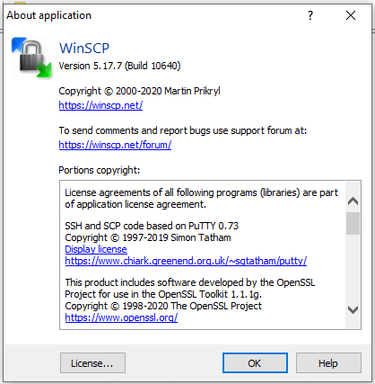
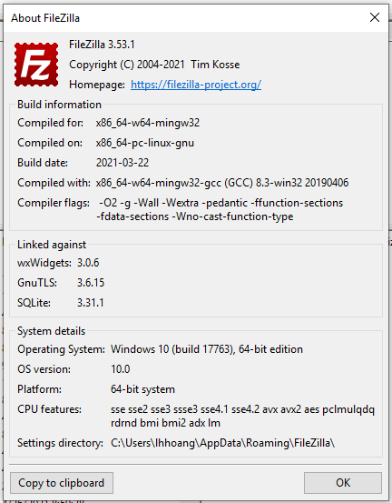
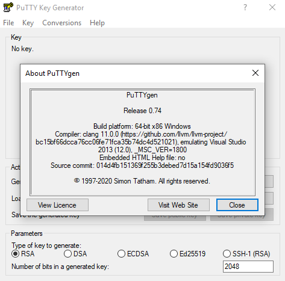
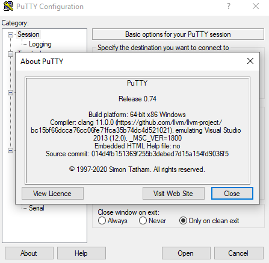
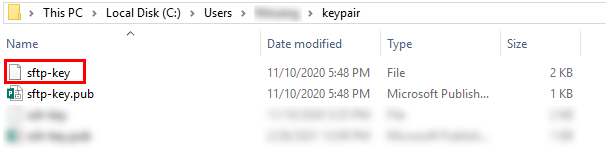
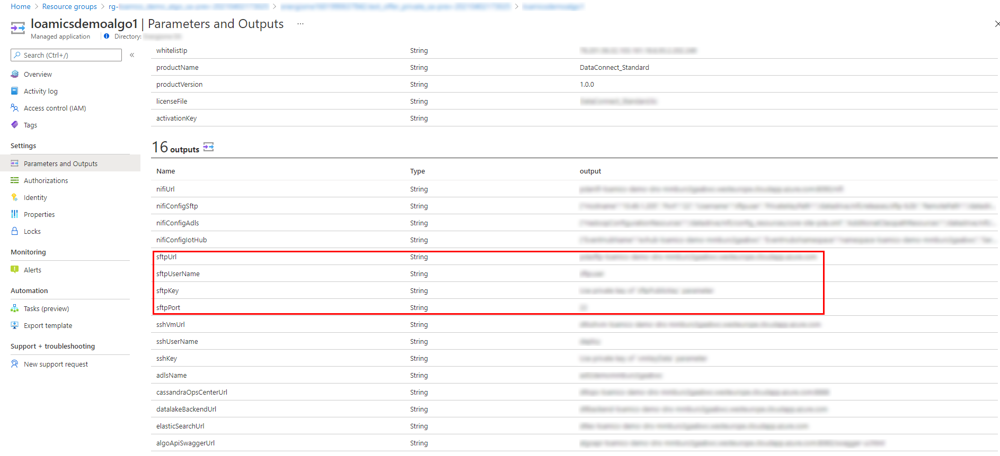

II. Prerequisites
1. Windows
2. WinSCP/FileZilla – Here is the version we use for this tutorial


3. PuttyGen – Here is the version we use for this tutorial
Once you install the PuTTY on your machine, you can easily run PuTTYgen.


3. SFTP private key - the key you will use to authenticate the SFTP server

this is the key that you generated in Step 2 of Deployment-User-Manual
4. You’ll need to know the Azure Endpoint of the SFTP server
For example, value of sftpUrl, sftpUserName, sftpKey, sftpPort in below image:
